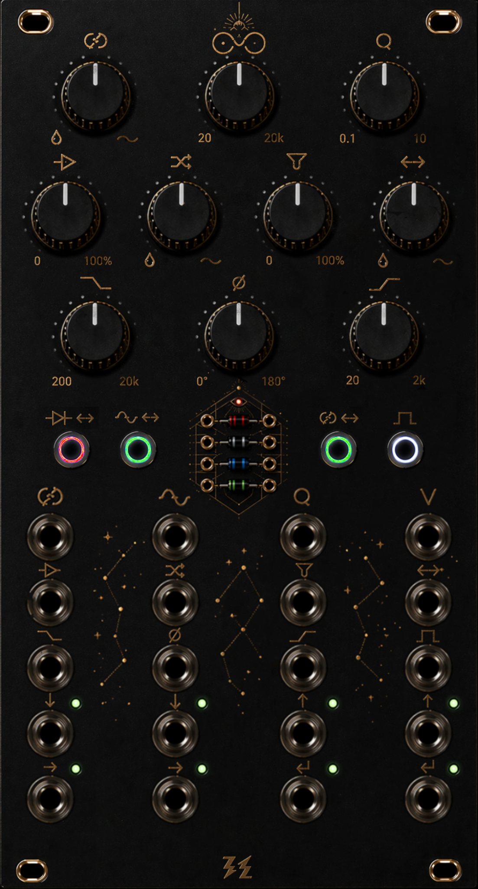

A compact stereo feedback instrument built around reroutable clipping, SSI2144 filtering, external or internal loop processing, post-loop tone control, and performable switch logic.
OUROBOROS is designed as a compact stereo feedback laboratory: route the diode clipper or SSI2144 filter in and out of the loop, patch external processors through send/return, or let the internal PT2399 delay keep the recursion alive when nothing is inserted.
It is equal parts sound design tool and performance instrument — with loop-end HP/LP/Phase cleanup, CV over key controls, performable switch logic, and a reversible symbol/text panel concept for players who prefer either visual language.

This diagram is intentionally simplified. It shows the current product concept honestly: input crossfade, switchable clipper and SSI2144 placement, send/return, loop-end HP/LP/Phase cleanup, and internal delay fallback. Click any block for detail.
Audit note: the diagram is product-facing, not schematic-level. It is meant to be readable first and exact about routing behavior second.
Click a block in the diagram to inspect what it does in the current topology.
The cropped symbolic panel image is treated as source of truth for control placement. Hover on desktop, tap on touch devices, or use the list on the right. One dataset drives both the hotspots and the detail card so descriptions stay consistent.
The panel concept is intentionally dual-sided. The symbolic side stays visually compact and characterful; the text side can carry concise labels for users who prefer direct readability. Mechanically the layout stays the same. Only the legend changes.
This section is written almost like a user manual: short press, long press, trigger assignment, and delay behavior. It describes the current product concept rather than an old schematic implementation.
Short press moves the clipper between the main path and the loop. Long press assigns the global trigger input to SW1.
Short press moves the SSI2144 section between the main path and the loop. Long press assigns the global trigger input to SW2.
Short press changes the macro topology: LOOP versus SERIES. In LOOP mode, the phase block returns into the crossfader wet input. In SERIES mode, the feedback loop is broken and the return chain ends at the output.
Short press sends a tap-tempo event. Long press assigns the global trigger input to SW4. Extra-long press toggles the internal delay on or off.
Keep SW1 and SW2 in LOOP, leave SW3 in LOOP, and use Feedback Mix as the threshold between gentle widening and unstable recursion. LP and HP keep the loop playable instead of just runaway.
Use SEND/RETURN for reverb, resonator, pitch, or another distortion. The module still gives you post-loop HP/LP and Phase cleanup, plus the ability to move clipper or SSI2144 before or inside the loop.
When no external S/R processor is used, the internal PT2399 delay can occupy that role. SW4 becomes a playable delay control: tap for tempo, hold for assignment, extra-long for on/off.
Stereo analog feedback instrument with input crossfade, switchable clipper and SSI2144 placement, external or internal loop processing, post-loop LP/HP/Phase cleanup, and MCU-assisted switch logic.
Feedback Mix, SSI2144 Freq, SSI2144 Q, Clipper Drive, Clipper Mix, Filter Drive, S/R Mix, LP Freq, Phase, HP Freq, four illuminated switches, and diode socket.
CV/control: Feedback Mix CV, SSI2144 Freq CV, SSI2144 Q CV, V/Oct, Clipper Drive CV, Clipper Mix CV, Filter Drive CV, S/R Mix CV, LP Freq CV, Phase CV, HP Freq CV, Trigger In. Audio: Input L/R, Output L/R, Send L/R, Return L/R.